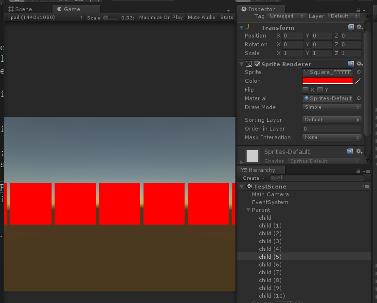

如图所示：

C#代码：
1 using System.Collections;
2 using System.Collections.Generic;
3 using UnityEngine;
4
5 public class SpriteRendererTest : MonoBehaviour {
6 List<Transform> list = new List<Transform>(); // 存储父物体的子对象
7 List<float> rendererWidthList = new List<float>(); // 存储子对象的宽度
8 private Vector3 centerPos = Vector3.zero; // 中心位置
9 private float offSet = 0.2f; //偏移量
10 private float length = 0.0f; // 初始化长度
11
12 void Start () {
13 // 遍历所有子对象
14 for (int i = 0; i < gameObject.transform.childCount; i++) {
15 var child = gameObject.transform.GetChild(i);
16 var width = child.GetComponent<SpriteRenderer>().sprite.bounds.size.x;
17 if (i < gameObject.transform.childCount - 1)
18 {
19 length += width + offSet;
20 }
21 else {
22 length += width;
23 }
24 list.Add(child);
25 rendererWidthList.Add(width);
26 }
27 var startX = centerPos.x - length / 2.0f; //第一个子对象的左边界
28 foreach (var child in list)
29 {
30 int index = 0;
31 child.transform.position = new Vector3(startX + rendererWidthList[index] / 2.0f, 0, 0);
32 startX = startX + offSet + rendererWidthList[index];
33 index += 1;
34 }
35 }
36 }
lua代码：
1 -- 创建数组
2 local parent = UGameObject.Find("Parent")
3 local objectList = {}
4 local rendererWidthList = {}
5 for i = 1, parent.transform.childCount do
6 local child = parent.transform:GetChild(i - 1)
7 local renderer = child:GetComponent(typeof(USpriteRenderer))
8 local width = renderer.sprite.bounds.size.x
9 table.insert(objectList, child)
10 table.insert(rendererWidthList, width)
11 end
12
13 local length = 0 -- 初始化长度
14 local offSet = 0.2 -- 间隔
15 for i = 1, #objectList do
16 local obj = objectList[i]
17 local width = rendererWidthList[i]
18 if i == #objectList then
19 length = length + width
20 break
21 end
22 length = length + width + offSet
23 end
24
25 local centerPos = Vector3.zero -- 中心位置
26 local startX = centerPos.x - length / 2 -- 初始位置
27
28 for i = 1, #objectList do
29 local obj = objectList[i]
30 local width = rendererWidthList[i]
31 obj.transform.position = Vector3(startX + width / 2, 0, 0)
32 startX = startX + width + offSet
33 end